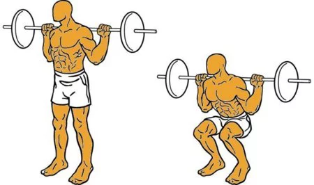

descripcion
la mejor pagina para encontrar la mejor rutina de musculacion de gimnasio
ejercicios basico
pres de banca
explicacion:
Recostado sobre un banco horizontal, los brazos estirados verticalmente, con la barra cargada en las manos, el movimiento consiste en bajar la barra hasta que toque el torso (fase excéntrica) y luego subir (fase concéntrica) hasta la posición inicial.

sentadilla
explicacion:
De pie, con los pies separados a la anchura de los hombros, coge una mancuerna en cada mano. Desciende lentamente flexionando las caderas, hasta que los cuádriceps estén aproximadamente paralelos al suelo. Espalda recta con los glúteos hacia atrás. Y baja y sube tan lento como puedas.
peso muerto
explicacion:
Agáchate y coge la barra con las manos separadas el ancho de los hombros. Contrae el abdomen y los glúteos, mantén la espalda recta, el pecho erguido y la mirada al frente y levanta la barra del suelo. Para levantar la barra del suelo, impúlsate con las piernas en lugar de tirar de la barra.

jalon al pecho
explicacion:
Inclínate ligeramente hacia atrás, saca pecho y contrae el abdomen. Tira de la barra hacia la parte superior del pecho mientras aprietas los omóplatos. Los codos deben moverse hacia abajo y no hacia atrás.